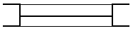

전산응용건축제도기능사 (2013-07-21 기출문제)
1과목: 건축구조
1. 건물 전체의 무게가 비교적 가벼우면서 강도가 커 고층이나 간사이가 큰 대규모 건축물에 적합한 구조는?
- 철근콘크리트구조
- 철골구조
- 목구조
- 블록구조
(정답률: 70%)

2. 목구조의 이음 위치에 산지(dowel)등을 박아 매우 튼튼한 이음이며, 휨을 받는 가로재의 내이음으로 많이 사용되는 이음은?
- 엇걸이 이음
- 주먹장 이음
- 메뚜기장 이음
- 반턱 이음
(정답률: 64%)
3. 목구조에서 통재기둥에 한편맞춤이 될 때 통재기둥과 층도리의 맞춤 방법으로서 가장 적합한 것은?
- 쌍장부 넣고 띠쇠로 보강한다.
- 빗턱통을 넣고 내다지장부맞춤 - 벌림쐐기치기로 한다.
- 걸침턱맞춤으로 하고 감잡이쇠로 보강한다.
- 통재넣기로 하고 주걱볼트로 보강한다.
(정답률: 43%)
4. 철근콘크리트 구조의 특성 중 옳지 않은 것은?
- 콘크리트는 철근이 녹스는 것을 방지한다.
- 콘크리트와 철근이 강력히 부착되면 압축력에도 유효하게 된다.
- 인장력은 콘크리트가 부담하고, 압축응력은 철근이 부담한다.
- 철근과 콘크리트는 선팽창 계수가 거의 같다.
(정답률: 78%)
5. 보강블록조 내력벽에 관한 설명 중 옳지 않은 것은?
- 내력벽은 일반적으로 벽두께를 늘리는 것보다 벽량을 크게 하는 쪽이 유효하다.
- 벽에 철근이 충분히 들어있는 경우에도 테두리보를 두어야 한다.
- 철근 배근부분은 콘크리트를 충분히 채운다.
- 통줄눈으로 쌓아서는 안 된다.
(정답률: 49%)
6. 벽돌구조의 내력벽 두께를 결정하는 요소와 가장 관계가 먼 것은?
- 벽의 높이
- 지붕 물매
- 벽의 길이
- 건축물의 층수
(정답률: 80%)
7. 한켜는 길이쌓기로 하고 다음은 마구리쌓기로 하며 모서리에 칠오토막을 써서 아무리는 벽돌 쌓기법은?
- 영식 쌓기
- 화란식 쌓기
- 불식 쌓기
- 미식 쌓기
(정답률: 78%)
8. 경첩(hinge) 등을 축으로 개폐되는 창호를 말하며, 열고 닫을 때 실내의 유효면적을 감소시키는 특징이 있는 창호는?
- 미서기창
- 여닫이창
- 미닫이창
- 회전창
(정답률: 75%)
9. 케이블을 이용하는 구조물에 해당하지 않는 것은?
- 현수구조
- 사장구조
- 트러스구조
- 막구조
(정답률: 62%)
10. 납작 마루에 사용되는 부재가 아닌 것은?
- 마룻널
- 장선
- 멍에
- 동바리
(정답률: 62%)
11. 마름돌 거친면의 돌출부를 쇠메 등으로 쳐서 면을 보기 좋게 다듬는 것을 무엇이라 하는가?
- 도드락다듬
- 정다듬
- 혹두기
- 잔다듬
(정답률: 63%)
12. 휨모멘트나 전단력을 견디게 하기 위해 사용되는 것으로 보 단부의 단면을 중앙부의 단면보다 크게 한 부분은?
- 헌치
- 슬래브
- 래티스
- 지중보
(정답률: 66%)
13. 돔의 상부에서 여러 부재가 만날 때 접합부가 조밀해지는 것을 방지하기 위해 설치하는 것은?
- 압축링
- 인장링
- 스페이스프레임
- 트러스
(정답률: 46%)
14. 목재의 이음과 맞춤을 할 때 주의사항으로 옳지 않은 것은?
- 공작이 간단하고 튼튼한 접할을 선택할 것
- 이음 - 맞춤의 단면은 응력의 방향에 직각으로 할 것
- 이음 - 맞춤의 위치는 응력이 작은 곳으로 할 것
- 맞춤면은 수축, 팽창을 위해 틈을 주어 가공할 것
(정답률: 62%)
15. 목재 마루널 깔기에서 널 옆이 서로 물려지게 하고 마루의 진동에 의하여 못이 솟아오르는 일이 없는 이상적인 마루깔기법은?
- 맞댄 쪽매
- 반턱 쪽매
- 제혀 쪽매
- 딴혀 쪽매
(정답률: 61%)
16. 복도 또는 간 사이가 적을 때에 보를 쓰지 않고 층도리와 간막이 도리에 직접 장선을 걸쳐 대고 그 위에 마루널을 깐 마루는?
- 동바리마루
- 홑마루
- 짠마루
- 납작마루
(정답률: 53%)
17. 아치벽돌을 특별히 주문 제작하여 만든 아치는?
- 민무늬아치
- 본아치
- 막만든아치
- 거친아치
(정답률: 80%)
18. 보강블록구조 내력벽에서 벽량의 최소값은 얼마인가?
- 10㎝/m2
- 13㎝/m2
- 15㎝/m2
- 18㎝/m2
(정답률: 85%)
19. 벽돌조 벽체에서 내쌓기를 할 때 내미는 정도의 한계는?
- 0.5B
- 1.0B
- 1.5B
- 2.0B
(정답률: 79%)
20. 바닥 면적이 40㎡ 일 때 보강콘크리트블록조의 내력벽 길이의 총합계는 최소 얼마 이상이어야 하는가?
- 4m
- 6m
- 8m
- 10m
(정답률: 59%)
2과목: 건축재료
21. 재료관련 용에 대한 설명 중 옳지 않는 것은?
- 열팽창계수란 온도의 변화에 따라 물체가 팽창, 수축하는 비율을 말한다.
- 비열이란 단위질량의 물질의 온도 1℃ 올리는데 필요한 열량을 말한다.
- 열용량은 물체에 열을 저장할 수 있는 용량을 말한다.
- 차음율은 음을 얼마나 흡수하느냐 하는 성질을 말하며, 재료의 비중이 클수록 작다.
(정답률: 82%)
22. 다음 중 지붕 재료에 요구되는 성질과 가장 관계가 먼 것은?
- 외관이 좋은 것이어야 한다.
- 부드러워 가공이 용이한 것이어야 한다.
- 열전도율이 작은 것이어야 한다.
- 재료가 가볍고, 방수, 방습, 내화, 내수성이 큰 것이어야 한다.
(정답률: 79%)
23. 건축물의 표면 마무리, 인조석 제조 등에 사용되며 구조체의 축조에는 거의 사용되지 않는 시멘트는?
- 플라이애시 시멘트
- 조강 포틀랜드 시멘트
- 고로슬래그 시멘트
- 백색 포틀랜드 시멘트
(정답률: 73%)
24. 건축재료의 강도구분에 있어서 정적강도에 해당하지 않는 것은?
- 압축강도
- 충격강도
- 인장강도
- 전단강도
(정답률: 77%)
25. 건축재료 중 벽, 천장 재료에 요구되는 성질이 아닌 것은?
- 외관이 좋은 것이어야 한다.
- 시공이 용이한 것이어야 한다.
- 열전도율이 큰 것이어야 한다.
- 차음이 잘되고 내화, 내구성이 큰 것이어야 한다.
(정답률: 84%)
26. 다음 목재 제품 중 일반건물의 벽 수장재로 사용되는 것은?
- 플로링 보드
- 코펜하겐 리브
- 파키드리 패널
- 파키트리 블록
(정답률: 76%)
27. 점토 제품 중 석영, 운모 등이 풍화되어 만들어진 도토를 원료로 한 것으로 소성온도 1100~1250℃ 정도며 백색의 불투명한 바탕을 이루는 것은?
- 토기
- 석기
- 도기
- 자기
(정답률: 57%)
28. 10㎝×10㎝인 목재를 400KN의 힘으로 잡아당겼을 때 끊어졌다면, 이 목재의 인장 강도는 얼마인가?
- 4 MPa
- 40 MPa
- 400 MPa
- 4000 MPa
(정답률: 72%)
29. 다음 중 목재의 허용인장강도가 가장 큰 것은?
- 참나무
- 낙엽송
- 전나무
- 소나무
(정답률: 57%)
30. 시멘트 및 콘크리트 제품의 형상에 따른 분류에 속하지 않는 것은?
- 판상제품
- 블록제품
- 봉상제품
- 대형제품
(정답률: 68%)
31. 시멘트의 품질이 일정할 경우 분말도가 클수록 일어나는 현상으로 옳은 것은?(오류 신고가 접수된 문제입니다. 반드시 정답과 해설을 확인하시기 바랍니다.)
- 초기강도가 낮아진다.
- 시공 후 투수성이 적어진다.
- 수화작용이 느려진다.
- 시공연도가 떨어진다.
(정답률: 45%)
32. 수화열 발생시 적은 시멘트로서 원자로의 콘크리트 제조에 가장 적합한 재료는?
- 조강포틀랜드 시멘트
- 중용열포틀랜드 시멘트
- 알루미나 시멘트
- 보통포틀랜드 시멘트
(정답률: 69%)
33. 다음 중 건물의 외부 벽체 마감용으로 적합하지 않은 석재는?
- 화강암
- 안산암
- 점판암
- 대리석
(정답률: 66%)
34. 석재를 형상에 의해 분류할 때 두께가 15㎝ 미만으로, 대략 너비가 두께의 3배 이상이 되는 것을 무엇이라 하는가?
- 판석
- 각석
- 견치석
- 사괴석
(정답률: 60%)
35. 운모계와 사문암계 광석으로써 800~1000℃로 가열하면 부피가 5~6배로 팽창되며, 비중이 0.2~0.4인 다공질 경석으로 단열, 흡음, 보온 효과가 있는 것은?
- 부석
- 탄각
- 질석
- 펄라이트
(정답률: 65%)
36. 금속재의 부식방지법으로 옳지 않은 것은?
- 부식방지를 위해 서로 다른 종류의 금속을 서로 잇대어 쓴다.
- 표면은 깨끗하게 하고, 특히 물기나 습기가 없도록 한다.
- 내식성이 큰 금속은 표면에 도료 등으로 피막을 만들어 보호한다.
- 가공 중에 생긴 변형은 풀림, 뜨임 등에 의해 제거하여 균일한 재료로 만든다.
(정답률: 84%)
37. 아스팔트의 품질 판별 관련 요소와 가장 거리가 먼 것은?
- 침입도
- 신도
- 감온비
- 강도
(정답률: 49%)
38. 도료 상태의 방수재를 바탕면에 여러 번 칠하여 얇은 수지 피막을 만들어 방수효과를 얻는 공법은?
- 시트 방수
- 도막 방수
- 아스팔트 방수
- 시멘트모르타르 방수
(정답률: 63%)
39. 판유리 종류를 600℃ 이상의 연화점 근처까지 가열한 후 표면에 냉기를 내뿜어 급랭시켜 건조하며, 담금유리라고도 하는 유리는?
- 연마 판유리
- 망입 판유리
- 강화유리
- 복층유리
(정답률: 81%)
40. 다음 중 현대 건축 재료의 발전방향에 대한 설명으로 옳지 않은 것은?
- 고성능화, 공업화
- 프리패브화의 경향에 맞는 재료개선
- 수작업과 현장시공에 맞는 재료개발
- 에너지 절약화와 능률화
(정답률: 81%)
3과목: 건축계획 및 제도
41. 건축물을 만드는 과정에서 다음 중 가장 먼저 이루어지는 사항은?
- 공간규모와 치수 결정
- 대지조건 파악
- 도면 작성
- 형태 및 규모 구상
(정답률: 86%)
42. 주택의 거실에 관한 설명으로 옳지 않은 것은?
- 가급적 현관에서 가까운 곳에 위치시키는 것이 좋다.
- 거실의 크기는 주택 전체의 규모나 가족 수, 가족 구성 등에 의해 결정된다.
- 전체 평면의 중앙에 배치하여 각 실로 통하는 통로로서의 역할을 하도록 한다.
- 거실의 형태는 일반적으로 직사각형이 정사각형보다 가구의 배치나 실의 활용 측면에서 유리하다.
(정답률: 51%)
43. 홀(hall)형 아파트에 관한 설명으로 옳지 않은 것은?
- 프라이버시의 확보가 용이하다.
- 공용통로 부분의 면적이 비교적 작다.
- 채광 및 통풍이 가장 불리한 형식이다.
- 건물의 양면에 개구부를 설치할 수 있다.
(정답률: 62%)
44. 조적조 벽체에서 표준형 벽돌 1.5B 쌓기의 두께로 옳은 것은? (단, 공간쌓기가 아닌 경우)
- 190㎜
- 220㎜
- 280㎜
- 290㎜
(정답률: 73%)
45. 건축법령상 공동주택에 속하지 않는 것은?
- 기숙사
- 연립주택
- 다가구주택
- 다세대주택
(정답률: 81%)
46. 주택단지 계획에서 근린주구에 해당되는 주택호수로 알맞은 것은?
- 10~20호
- 400~500호
- 1600~2000호
- 6000~12000호
(정답률: 72%)
47. 지역난방(district heating)에 관한 설명으로 옳지 않은 것은?
- 각 건물의 설비 면적이 증가된다.
- 각 건물마다 보일러 시설을 할 필요가 없다.
- 설비의 고도화에 따라 도시의 매연을 경감시킬 수 있다.
- 각 건물에서는 위험물을 취급하지 않으므로 화재위험이 적다.
(정답률: 57%)
48. 가스계량기는 전기 개폐기로부터 최소 얼마 이상 떨어져 설치하여야 하는가?
- 20㎝
- 30㎝
- 45㎝
- 60㎝
(정답률: 53%)
49. 복사난방에 관한 설명으로 옳은 것은?
- 방열기 설치를 위한 공간이 요구된다.
- 실내의 온도분포가 균등하고 쾌감도가 높다.
- 대류식 난방으로 바닥면의 먼지 상승이 많다.
- 열용량이 작기 때문에 방열량 조절이 용이하다.
(정답률: 60%)
50. 다음 중 실내조명 설계순서에서 가장 먼저 이루어져야 할 사항은?
- 조명 방식의 선정
- 소요 조도의 결정
- 전등 종류의 결정
- 조명 기구의 배치
(정답률: 67%)
51. 디자인 요소 중 수평선이 주는 조형효과와 가장 거리가 먼 것은?
- 영원
- 존엄
- 평화
- 고요
(정답률: 82%)
52. 가옥 트랩으로서 옥내 배수 수평주관의 말단 등 가옥 내 배수기구에 부착하여 공공 하수관으로부터의 해로운 가스가 진입하는 것을 방지하는 데 사용되는 것은?
- P트랩
- S트랩
- U트랩
- 버킷트랩
(정답률: 58%)
53. 밝은 상태에서 어두운 상태까지 폭넓게 명암을 나타낼 수 있고, 다양한 질감 표현이 가능하며, 지울 수 있는 장점이 있는 반면 번지거나 더러워지는 단점을 가진 투시도 묘사용구는?
- 잉크
- 연필
- 볼펜
- 포스터 칼라
(정답률: 91%)
54. 색광의 3원색에 속하지 않는 것은?
- 빨강(R)
- 노랑(Y)
- 녹색(G)
- 파랑(B)
(정답률: 66%)
55. 제도용지의 규격에 있어서 가로와 세로의 비로써 옳은 것은?
- 루트 2 : 1
- 2 : 1
- 루트 3 : 1
- 3 : 1
(정답률: 82%)
56. 건축도면에 치수기입 방법에 관한 설명으로 옳은 것은?
- 치수는 특별히 명시하지 않는 한 마무리 치수로 표시한다.
- 치수 기입은 치수선 중앙 아랫부분에 기입하는 것이 원칙이다.
- 치수 기입은 치수선에 평행하게 도면의 오른쪽에서 왼쪽으로, 위로부터 아래로 읽을 수 있도록 기입한다.
- 치수선에 양끝은 화살 또는 점으로 혼용해서 사용할 수 있으며 같은 도면에서 치수선이 작은 것은 점으로 표시한다.
(정답률: 73%)
57. 건축제도에서 보이지 않는 부분의 표시에 사용되는 선의 종류는?
- 파선
- 1점 쇄선
- 가는 실선
- 굵은 실선
(정답률: 86%)
58. 건축도면 중 건물벽 직각 방향에서 건물의 외관을 그린 것은?
- 입면도
- 전개도
- 배근도
- 평면도
(정답률: 78%)
59. 다음 중 평면도에 나타내야 할 사항이 아닌 것은?
- 층고
- 벽두께
- 창의 형상
- 벽 중심선
(정답률: 72%)
60. 다음과 같은 창호의 평면표시 기호의 명칭으로 옳은 것은?

- 회전창
- 붙박이창
- 미서기창
- 외여닫이창
(정답률: 85%)